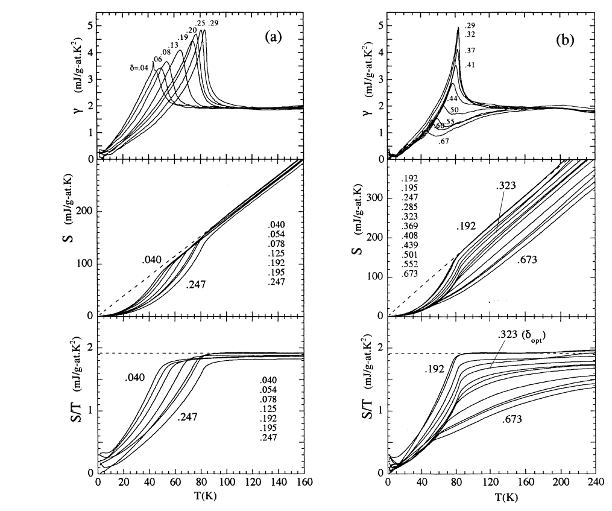

Thermodynamic review · Source 206
Specific heat evidence on the normal state pseudogap
Specific heat and integrated entropy distinguish a depletion of low-energy spectral weight from a simple superconducting gap that redistributes it.
See → explain → test
From heat capacity to missing low-energy entropy
Picture 1 / 4
Translate the measured quantity
Look for: Follow Cₑ → γ = Cₑ/T → accumulated entropy.
Heat capacity responds to thermally accessible states. Integrating γ gives S; subtraction of the lattice contribution matters.
Check the argument in the original: PDF p. 1 ↗
Picture 2 / 4
Look at the depleted window
Look for: Compare a flat reference DOS with a triangular low-energy depletion.
The shaded deficit is within a chosen low-energy window. “States nonconserving” here does not mean electrons disappear.
Check the argument in the original: PDF pp. 1–2 ↗
Picture 3 / 4
Entropy remembers lower temperatures
Look for: Compare absolute toy entropy for the reference and depleted DOS.
Both entropies grow, but a deficit can remain. Convergence of S/T alone would not prove recovery of the absolute entropy. A DOS model does not identify the pseudogap mechanism.
Check the argument in the original: PDF pp. 2–3 ↗
Picture 4 / 4
Area depends on what is plotted
Look for: Compare an entropy difference with an entropy-over-temperature difference.
An S/T plot requires a factor of T before its area becomes an energy. These drawings show the operation, not fitted data.
Check the argument in the original: PDF pp. 3–4 ↗
Predict before revealing
A graph shows Δ(S/T). Which operation gives its contribution to condensation energy?
Choose an answer, then compare the reasoning.
Condensation energy is an integral of an entropy difference. If the graph displays S/T, first multiply by T. Signs and the normal-state continuation must follow the source’s convention.
Read the answer
Integrate T × Δ(S/T) over T. Condensation energy is an integral of an entropy difference. If the graph displays S/T, first multiply by T. Signs and the normal-state continuation must follow the source’s convention.
Read the author figures · evidence and axes

Compare γ, S and S/T vertically. Contrast the recovery of the overdoped entropy curves on the left with the underdoped offsets on the right.
The labels are oxygen deficiency δ in the Ca-doped system, not directly holes per plane.
Open full source page ↗ · Click the figure to enlargeDetailed argument · from assumptions to conclusions
1 · Translate calorimetry into the quantity being counted
The measured electronic heat capacity Cel is divided by temperature to give γ(T). Integrating γ gives the electronic entropy S(T). γ emphasizes the thermally accessible density of states, while entropy accumulates the contribution from all lower temperatures. The paper treats these as windows on low-energy spectral weight around the chemical potential. The thermal window broadens with T; neither curve measures an infinitely sharp density of states at one energy.
Experimentally one must separate electronic heat capacity from a much larger lattice contribution. This short paper reviews the resulting electronic quantities, rather than providing a complete raw-data reduction tutorial. A suppressed γ can indicate a gap-like density of states, but the shape of γ alone is not enough to identify its origin. The underlying ungapped density of states can itself vary with energy, especially in the LSCO comparison.
PDF p. 1 ↗2 · Compare states-conserving and depleted low-energy spectra
Both a triangular depletion and a d-wave-like gap can yield approximately linear low-temperature γ. The important difference in the authors’ argument is whether spectral weight removed near the Fermi energy is restored nearby. If it is redistributed within the relevant energy range, the entropy deficit can recover on heating. In their underdoped data the deficit remains to approximately room temperature. That observation motivates a low-energy states-nonconserving description.
The phrase states nonconserving does not mean that electrons disappear or that the total Hilbert space violates a sum rule. It refers to the low-energy density of states used in the phenomenology and the absence of recovery in the measured window. The paper also reports no resolved sharp onset in these thermodynamic curves. That absence is a statement about these observations and their sensitivity, not a proof that no possible hidden order can exist.
PDF pp. 1–2 ↗3 · Read the oxygen series in Figure 1
For Y₀.₈Ca₀.₂Ba₂Cu₃O₇₋δ, increasing oxygen deficiency δ generally reduces the plane hole density; δ is not the same variable as p. Calcium helps extend the overdoped range. On the overdoped side γ above Tc is roughly common among samples and the entropy curves recover. Near the paper’s δcrit ≈ 0.25 the superconducting jump and high-temperature entropy change markedly; further underdoping produces a persistent deficit.
In Figure 2 the authors fit an underdoped sample with a nearly temperature-independent pseudogap above Tc. Figure 3 then reconstructs an equivalent d-wave gap from the entropy. An equivalent gap is a parametrization that reproduces S(T); it need not be the true superconducting order parameter. A smooth spectral energy scale across Tc therefore does not establish that the pseudogap and coherent superconductivity are the same order.
PDF pp. 1–3 ↗4 · Understand why condensation energy needs a counterfactual
U₀ is obtained from the area between the normal and superconducting entropy curves below Tc. The superconducting entropy is measured, but the normal state in that range is hidden by superconductivity. It must be continued from above Tc using a model. If the normal state retains its pseudogap, its entropy is lower and the resulting condensation energy is smaller. If the entropy loss above Tc is assigned entirely to superconducting fluctuations, a different metallic continuation gives a larger area.
Calorimetry alone cannot choose that continuation independently of interpretation. The authors compare the resulting condensate strength with superfluid density, diamagnetism and irreversibility-field trends. They also note that Zn suppresses superconducting quantities without comparably removing Eg or the high-temperature entropy deficit. Their preferred reading is that the pseudogap persists and weakens the condensate. Treat this as an argued historical interpretation supported by several comparisons, rather than as a direct measurement of a unique microscopic order parameter.
PDF pp. 2–3 ↗5 · Doping trends, energy scales and limits
The authors compare gap scales across YBCO, Ca-doped YBCO, Zn-substituted YBCO and LSCO. Their phenomenological Eg falls with doping on an exchange-energy scale and vanishes near pcrit ≈ 0.17–0.19 in the calibration used here. This numerical interval is not a universal modern pseudogap endpoint for every compound. Their LSCO fit Eg ≈ 1550(1 − x/0.17) K is explicitly discussed for x ≤ 0.15; extrapolating it to larger x and accepting a negative gap would be meaningless.
Entropy at fixed high temperature grows approximately linearly with added holes over the relevant range. This motivates the idea that doping supplies low-energy weight while a correlated hole–spin scale softens. Eg quoted in kelvin is an energy divided by kB, not a transition temperature. The paper links that scale to exchange physics, but it does not solve the microscopic spectral function or derive a complete theory of the pseudogap. Use the entropy comparison as the central experimental argument and the scale model as its interpretation.
PDF pp. 3–4 ↗Essential equations · symbols, meaning & units
γ has units of energy per amount per K²; S has units of energy per amount per K. Choose the same molar or per-plane normalization before comparing samples.
PDF p. 1 ↗The result has energy units. If plotting S/T rather than S, the integrand is T[(S/T)n − (S/T)s]; the unweighted graphical area is not U₀.
PDF pp. 2–3 ↗Explain it in depth
Can identical γ at high T coexist with different entropy?
Yes. γ is the derivative dS/dT. Parallel entropy curves can retain an offset accumulated at lower temperatures.
Why does estimating U₀ require an assumption?
The counterfactual normal entropy below Tc is not directly observed in the superconducting state and must be continued.
Does an Eg of 220 K mean a phase transition at 220 K?
No. It denotes an energy scale Eg/kB in this plot, not an observed ordering temperature.
Source coverage and version
All four PDF pages read in text and visually. Figures 1–7, δ and p labels, entropy integration and condensation-energy assumptions checked. These are the authors’ 1998 conclusions and doping calibrations.